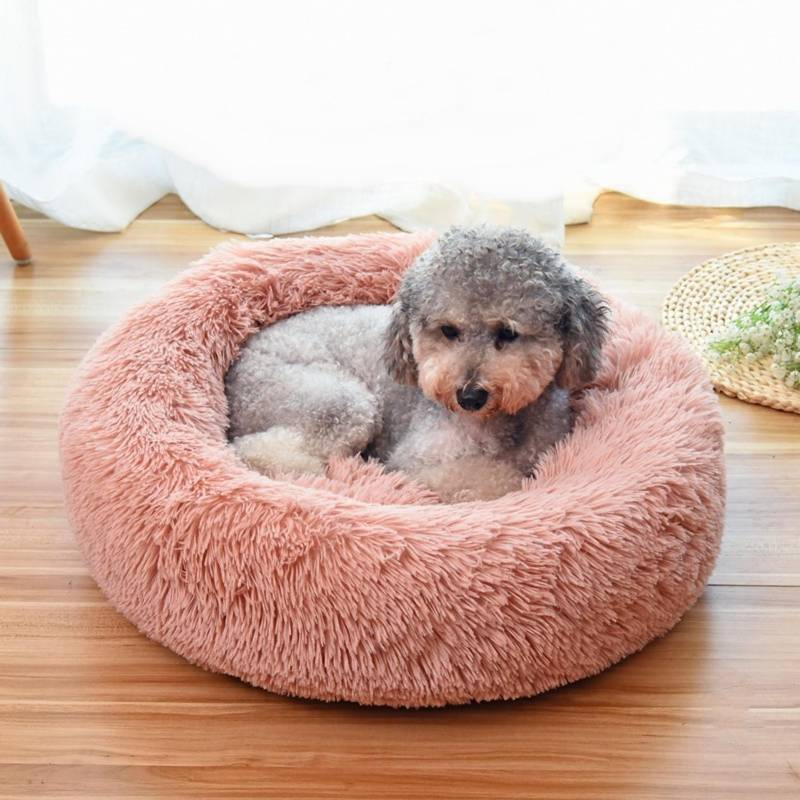

El mejor descanso para tu perro
El descanso es fundamental para la salud de tu perro. Elegir una cama adecuada ayuda a prevenir problemas articulares y mejora su calidad de vida.
Consulta con nuestros especialistas para encontrar la mejor opción para tu mascota.